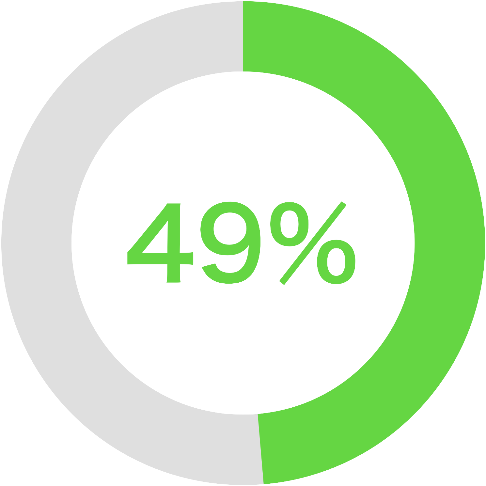
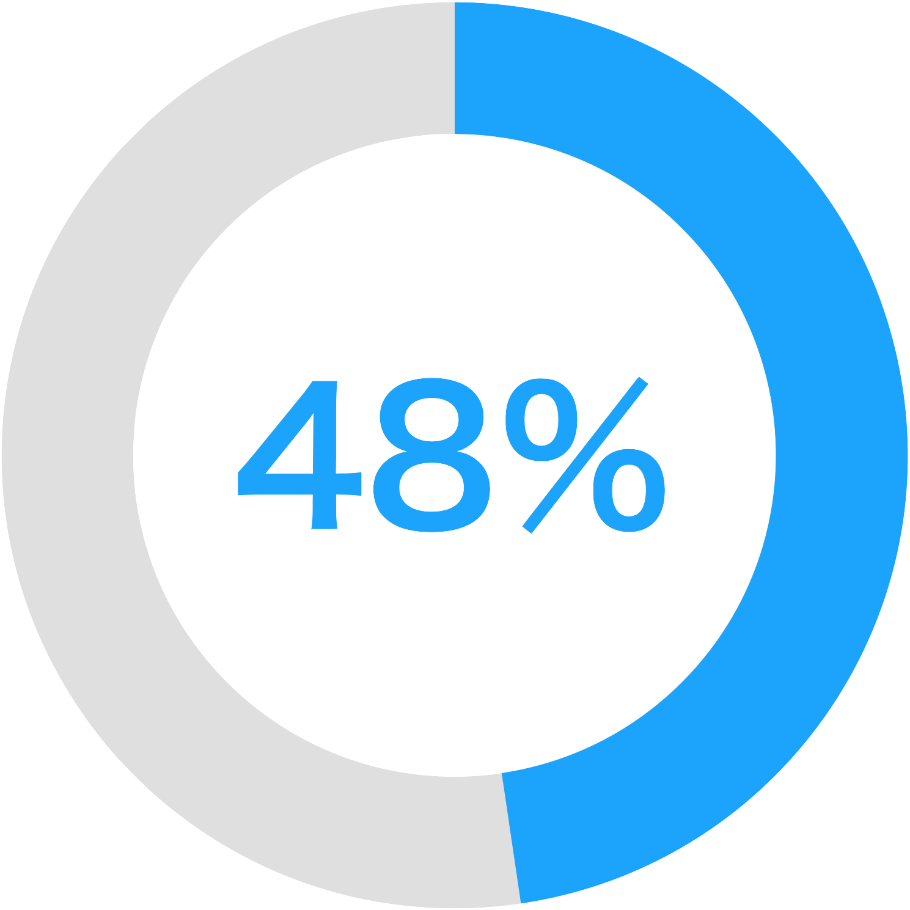

著作権とは、写真や動画、音楽など様々な形の
作品に対してその作品を作った人に対して与えられる権利で、簡単に言えば、自分が作った作品を勝手に他の人に使われないようにする権利のことです。
著作権のある作品を使うには著作権を持っている人(
著作者)の許可が必要になります。基本的に、インターネット上にある画像や動画には著作権があります。つまり、それらを勝手に使うことはできないということです。
しかし、それでは「インターネット上にある画像をスマホの壁紙にすることもできないの？」と思うかもしれません。これに関しては、
私的利用と言って、個人的な利用の範囲では著作者の許可なしに使うこともできます。
ただ、この個人的な利用と言うのは自分だけが見れる環境での使用であって、SNSなどで使う場合にはアウトです。つまりこれは
SNSのアイコンにアニメ画像を使うのもアウトだということです。もちろん、テレビの動画やインターネットで見つけた画像をSNSに
アップロードするのもアウトです。「SNSでアニメアイコンの人なんてたくさんいるじゃん」と思うかもしれませんが、これは著作権が
親告罪という、著作者が訴えないと罪に問われないというものなので、アニメの制作会などが
黙認しているという状況です。ですので、アニメアイコンにしてたからという理由で訴えられるというのは、現状ないといっていいでしょう。
アンケートを実施！


●LINEのアイコンが法に触れる可能性があると思われる人
●SNSのアイコンに有名人・アニメの画像などを使う事がいけない事だと知ってた人
中高生の著作権に関わる大きな問題の一つが、違法ダウンロードです。違法ダウンロードとは、ネット上に違法にアップロードされた動画や音楽などを許可なくダウンロードすることで、犯罪になります。誰でも簡単にできるようなことですが、犯罪なので絶対にしないようにしましょう。
よく知られていて多くの人が使っているサイトを使いましょう。ババ。。。
急に、ウイルスに感染しているかのような表示を出し、偽のアンチウイルスソフトをダウンロードするように促すサイトです。
ワンクリック詐欺サイトと同じように、無視して画面を閉じるだけで構いません。本当にウイルスに感染しているのではないか、と不安に思うかもしれませんが、基本的にはブラウザ上でコンピューターがウイルスに感染しているかを判断することはできません。
他のサイトをコピーした偽のサイトが作られたり、企業のサーバーが不正にアクセスされて外部の人に操作されることがあります。また、これらのサイトにはウイルスが仕掛けられる事があります。
URLが正しいかチェックしたり、接続先のウェブサイトが安全かどうかチェックするサービスを使うことでリスクを減らすことができます。